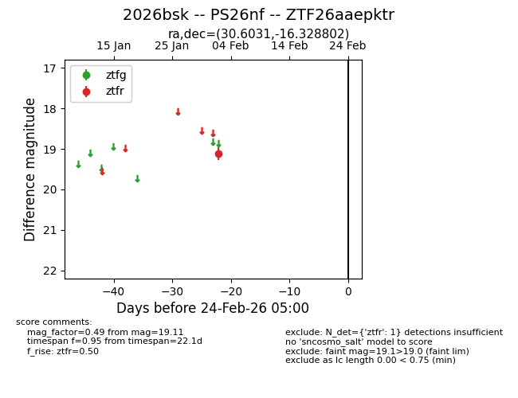
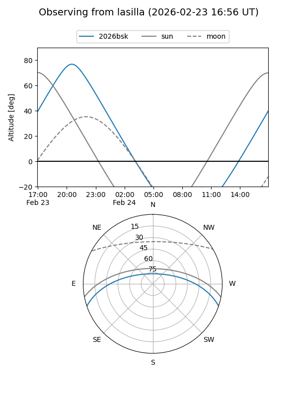
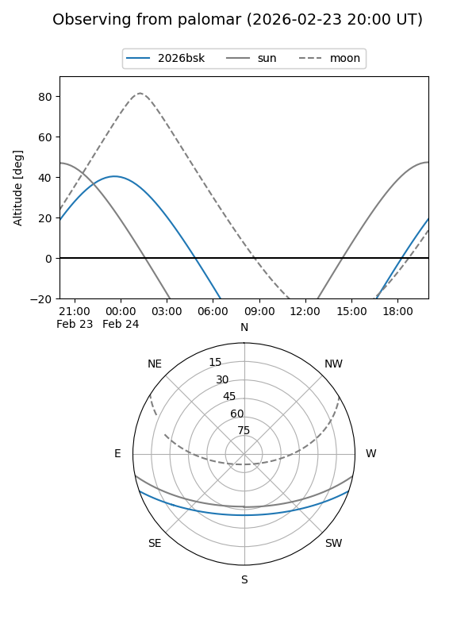

2026bsk
Target 2026bsk at 2026-02-24 09:08
Aliases and brokers:
FINK: link
Lasair: link
ALeRCE: link
TNS: link
YSE: link
alt names
ZTF26aaepktr (ztf,fink_ztf)
2026bsk (tns,yse)
PS26nf (panstarrs)
Coordinates:
equatorial (ra, dec) = 30.6031,-16.32880
equatorial (HMS+DMS) = 02:02:24.74,-16:19:43.69
galactic (l, b) = (183.2709,-70.33222)
Flags:
Photometry:
last ztfr=19.11
1 ztfr detections
Lightcurve

Visibility


Additional plots